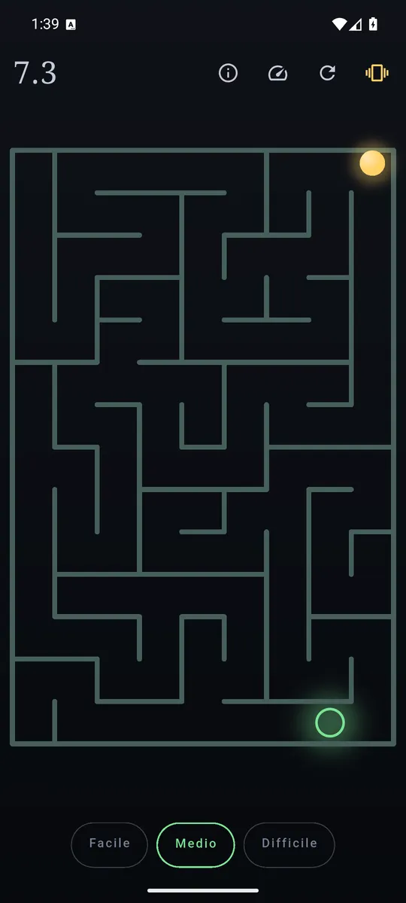
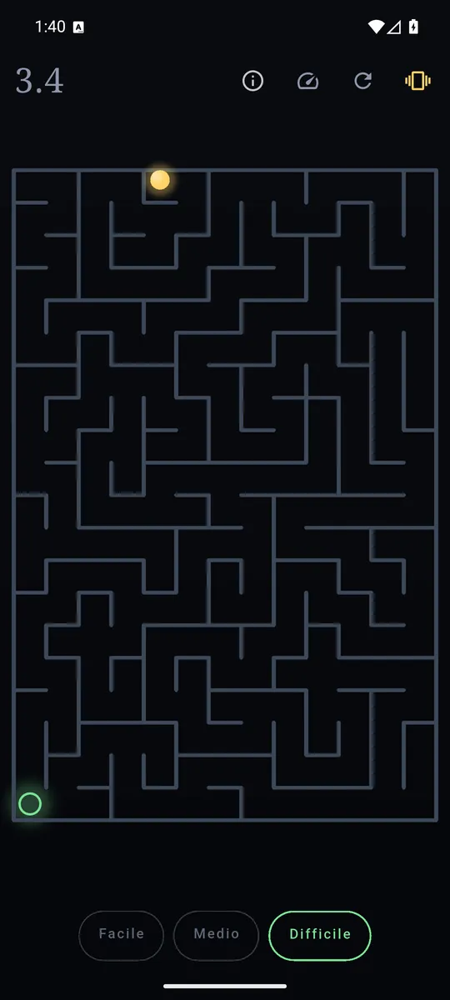
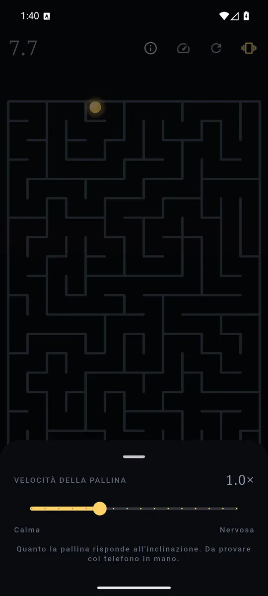

ItalianoEnglish
A maze and a ball. Tilt the phone, roll it to the way out: the ball moves with physics rather than from square to square — it gathers speed, bounces, slows down.

The ball follows the phone: from the green circle to the light at the top. 
Easy, medium, hard — and the maze is always new. 
Set how much the ball answers the tilt.
What it does
- Generated mazes, a different one every time: no levels to learn by heart, and no end to reach.
- Three difficulties. Easy with a few shortcuts, Medium, and Hard — where there is one route and every wrong turn is a dead end.
- The board warms as you get nearer the exit: the colour tells you, with no map and no arrow.
- The clock starts when you tilt, not when the maze appears, and stops when you are out. Your best time on each difficulty stays on the phone.
- In English and Italian, following the phone's language.
The friction is tuned, not left to chance
A ball that slides like ice is unplayable; one that is over-damped feels broken. The friction and the bounce in Maze are chosen by hand so that the ball answers your wrist rather than your patience — which is the difference between a game of dexterity and a game of waiting. How strongly it answers the tilt is yours to set.
Nothing to buy, nothing to wait for
There are no lives, no purchases and no online leaderboard — that would be a server, and we have none. The best time is yours and it stays here.
Your data stays yours
Maze asks for no permissions beyond the ads network and the vibrator: it needs the accelerometer, which asks for none. On a device that has no accelerometer the app says so, instead of showing a ball that never moves.
How it is paid for
One banner anchored at the bottom, and that is all: no ads mid-game, no subscription, no difficulty held hostage.
Where to find it
Not on Google Play yet. The link will appear here when it is.